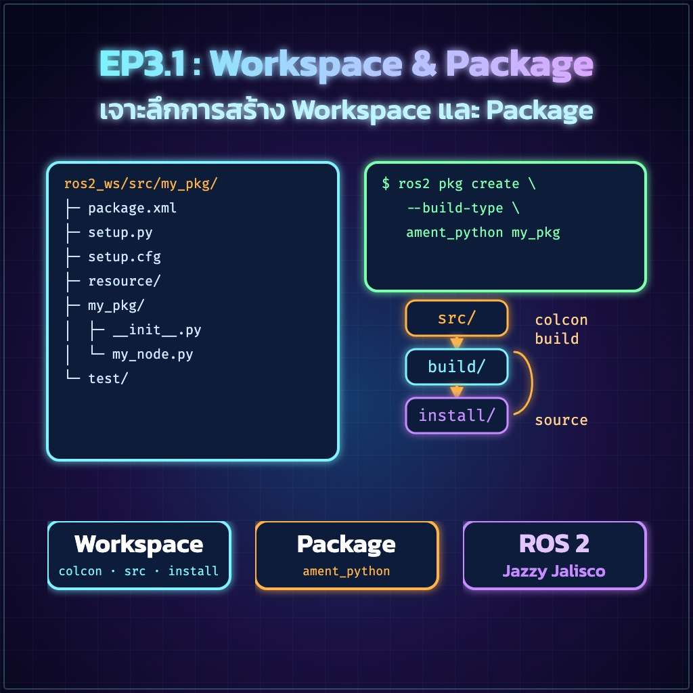

"ทำครั้งเดียวให้ถูกจุด ไม่หลงทาง ไม่ติด Error"
ปัญหาใหญ่ที่สุดของมือใหม่ไม่ใช่การเขียนโค้ดผิด แต่คือการ "พิมพ์คำสั่งผิดที่"
ในบทเรียนนี้เราจะแยกแยะให้ชัดเจนว่าอะไรต้องทำตรงไหน
Workspace คือ "บ้าน" ของโปรเจกต์ทั้งหมด เราจะสร้างโฟลเดอร์ชื่อ ros2_ws และโฟลเดอร์ src ไว้ข้างใน
mkdir -p จะสร้างโฟลเดอร์ซ้อนกันให้ทันที
Package คือ "กล่อง" ที่เก็บโค้ดในหัวข้อนั้นๆ เช่น กล่องคุมล้อ, กล่องประมวลผล AI
ความหมาย:
--build-type ament_python — บอกว่าเราจะเขียนด้วยภาษา Pythonmy_first_robot — ชื่อ Package (ห้ามเว้นวรรค/ห้ามใช้ตัวใหญ่)--dependencies rclpy — บอกว่าเราขอใช้ห้องสมุด ROS 2 สำหรับ Pythonกฎเหล็ก: "ต้องถอยหลังกลับมาที่ Root เสมอ"
colcon build ในโฟลเดอร์ src หรือโฟลเดอร์ย่อยข้างในbuild/install ไว้ผิดที่ ทำให้ระบบพังและรกไปหมด
หลังจาก Build เสร็จ ระบบจะสร้างไฟล์ตั้งค่าใหม่ขึ้นมา เราต้อง "ประกาศ" ให้ Terminal รู้จัก Package ใหม่ที่เราเพิ่งสร้าง
Package not found
ขั้นตอน: mkdir (Home) → create (src) → build (Root) → source (Root)